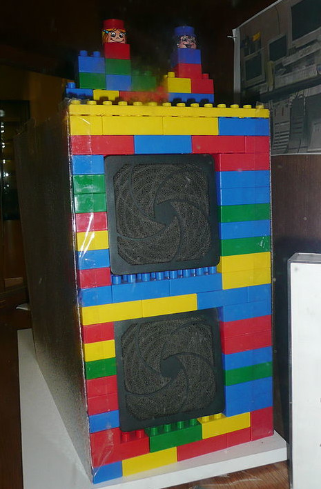

Da garagem ao Googleplex
O primeiro escritório dos caras era muito simples, mas já colorido. Diz a lenda que uma mesa de ping-pong, um tapete azul e um servidor decorado de Legos eram as poucas mobílias que tinham no início. Aliás, essa é a vibe até hoje nos escritórios do Google ao redor do mundo. A proprietária da garagem onde começaram era Susan Wojcicki no momento a CEO do YouTube.